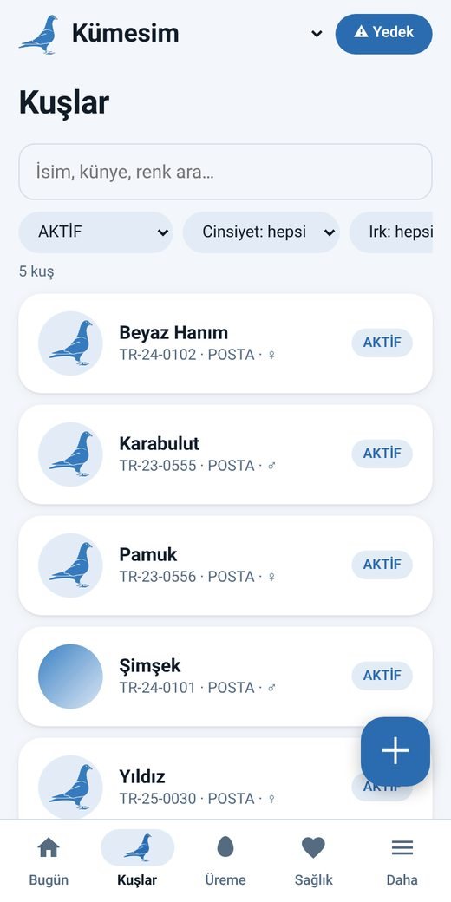
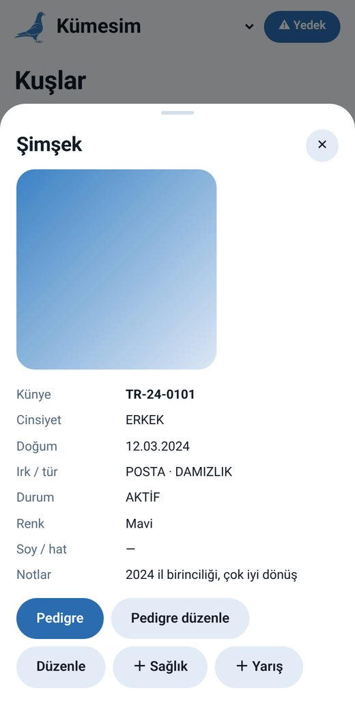
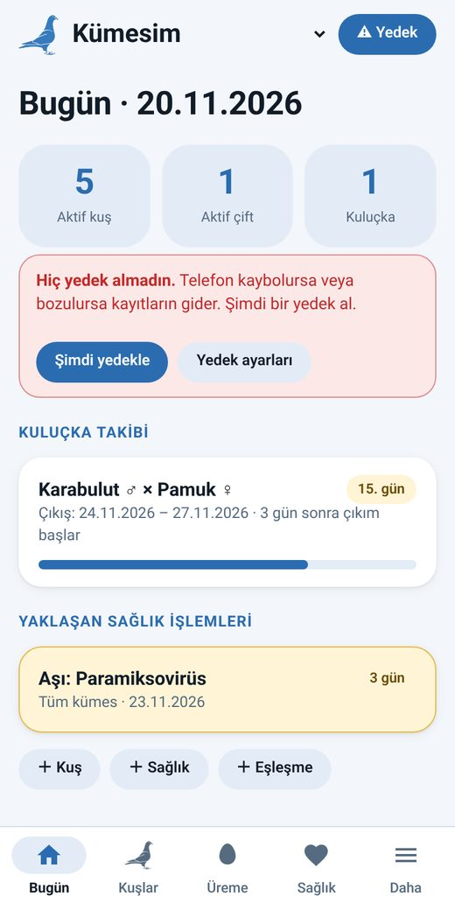
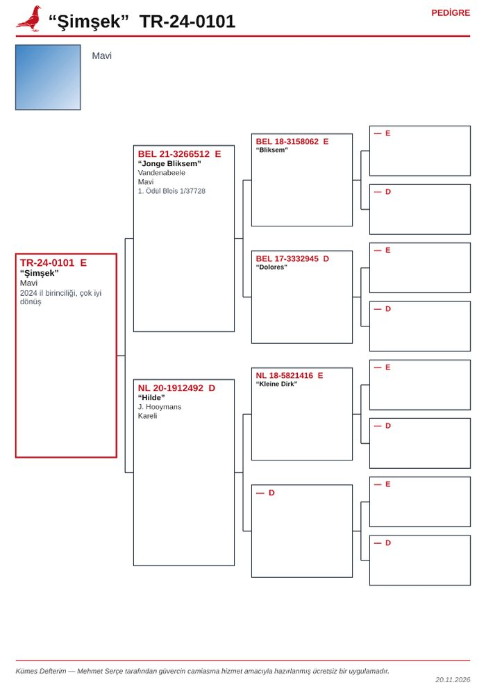
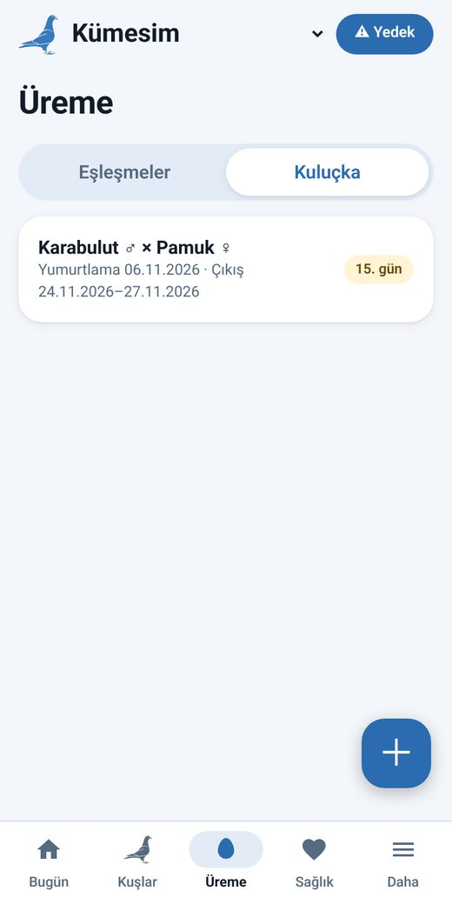
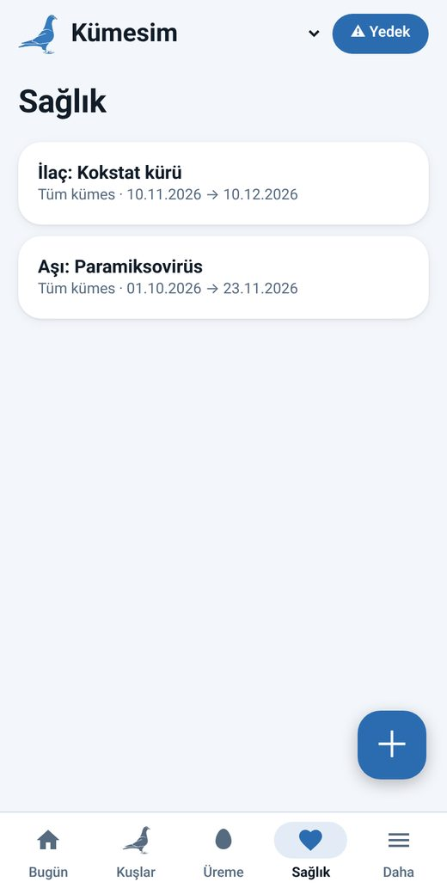

Güvercin yetiştiricileri için hazırlanmış, kâğıt defter yerine geçen bir uygulamadır. Hesap, üyelik ve ücret yoktur. Veriler sunucuya gönderilmez, sadece senin telefonunda durur.
📷 Fotoğraftan eklePedigre fotoğrafını yükle, kuş otomatik kaydolsun
🕊 KuşlarFotoğraf, künye, renk, notlar
🌳 Pedigre3 nesil, kişiye özel, PDF/görsel
🥚 Kuluçka18–21. gün uyarısı, yavru ekleme
💉 SağlıkAşı/ilaç tarihleri ve hatırlatma
🏁 YarışDerece ve mesafe kayıtları
🏠 Çoklu kümesİstediğin kadar küme ekle
İnternetsiz çalışır. Bir kez kurduktan sonra uçak modunda bile kullanırsın. İnternet sadece güncelleme ve e-posta/yedek paylaşımı için gerekir.
2Telefona kurulum
App Store veya Play Store'dan indirilmez. Linke girip Ana Ekrana Ekle yaparsın, uygulama diğerleri gibi simge olarak gelir.
iPhone
Linki mutlaka Safari ile aç (WhatsApp içinden değil: linke basıp "Safari'de aç"ı seç).
Alttaki Paylaş düğmesine (kare ve yukarı ok) dokun.
Aşağı kaydırıp Ana Ekrana Ekle'yi seç, Ekle'ye bas.
Bundan sonra uygulamayı ana ekrandaki güvercin simgesinden aç.
iPhone'da önemli: Uygulamayı Safari sekmesinde kullanırsan iPhone bir süre sonra verilerini silebilir. Mutlaka ana ekrana ekleyip oradan aç ve düzenli yedek al.
Android
Linki Chrome ile aç.
Sağ üstteki ⋮ menüsüne dokun.
Uygulamayı yükle veya Ana ekrana ekle'yi seç.
3İlk adımlar
Uygulama açılınca senin için "Kümesim" adlı bir küme hazır gelir. Adını değiştirmek için Daha → Kümeler → Düzenle yolunu kullan.
Kuş eklemek
Alttaki Kuşlar sekmesine geç.
Sağ alttaki ＋ düğmesine bas.
İsim ve künyeyi yaz, cinsiyet/renk/doğum tarihini seç, istersen fotoğraf ekle (en fazla 4).
Kaydet'e bas.

Kuşlar listesi: arama ve filtreler üstte
Kuşa dokunursan detayı açılır: bilgileri, fotoğrafları, pedigresi ve sağlık/yarış kayıtları.

İpucu: Baba ve anne kuşları seçersen yavrunun soy ağacı otomatik dolar (bölüm 5'e bak). Kuşun "Notlar" kısmına yazdıkların pedigrede de görünür.
Bugün ekranı
Uygulama açılınca ilk bu ekran gelir: yaklaşan kuluçka çıkışları, yaklaşan aşılar ve yedek durumun burada görünür. Bildirim yerine bu ekrana bakıyoruz, bu yüzden arada açıp göz at.

4Pedigre hazırla ve paylaş
Kuşa dokun, Pedigre düzenle'yi seç.
Her ata için künye, isim, yetiştirici, renk ve başarıları yaz. Kayıtlı kuşlardan seç listesinden daha önce eklediğin bir kuşu seçersen onun bilgileri ve kendi ataları otomatik dolar.
Kaydet'e bas. Pedigre hazır!
Paylaşmak için Görsel olarak paylaş veya PDF olarak paylaş'a dokun, WhatsApp'a ya da Dosyalar'a gönder.

Örnek pedigre çıktısı
Kişiye özel yap: Pedigre ekranında Tasarımı özelleştir'e bas. Başlığı, kendi adını, adresini, telefonunu ve renk temasını seç. Bir kez yazman yeterli, tüm pedigrelerde kullanılır. Kuşun fotoğrafı kesilmeden sığar.
Atalar otomatik kaydedilir: Yazdığın her ata, kuş listene "PASİF" olarak eklenir. Böylece bir sonraki sefer yeniden yazmadan seçebilirsin. Görmek için Kuşlar'da Durum → PASİF filtresini seç, istersen Aktif yap.
Elindeki pedigreyi fotoğraftan otomatik ekle
Kâğıt pedigreyi tek tek yazmana gerek yok: fotoğrafını çek (veya PDF yükle), yapay zekâ kuşu ve atalarını okuyup kaydetsin.
Kuşlar sekmesinde 📷 Pedigre görselinden kuş ekle'ye dokun.
İlk seferde bir kez: ücretsiz bir Google anahtarı gerekir. Ekrandaki adımları izle: aistudio.google.com/apikey adresini aç, Google hesabınla giriş yap, Create API key'e bas, çıkan anahtarı kopyalayıp uygulamaya yapıştır, onay kutusunu işaretle.
Pedigrenin fotoğrafını çek veya dosyadan seç (JPG, PNG, PDF).
10–40 saniye sonra kuşun bilgileri formda dolu gelir. Kontrol edip Kaydet'e bas.
Pedigre hemen açılır. Hatalı okunan yer varsa Atalar'dan düzelt. Atalar da pasif kuş kaydı olarak eklenir.
Mutlaka kontrol et: Yapay zekâ bazen künye rakamlarını yanlış okuyabilir. Özellikle künye numaralarına ve isimlere bak, hatalı olanı düzelt.
Gizlilik: Sadece yüklediğin pedigre görseli okunmak üzere Google'ın yapay zekâ servisine gönderilir; kuş listen ve diğer kayıtların gönderilmez. Ücretsiz kullanımda Google görseli ürün geliştirmede kullanabilir. Bu özellik internet ister. Anahtarın sadece telefonunda saklanır ve yedeğe girmez. Ücretsiz günlük bir limit vardır; dolarsa ertesi gün yeniden denersin.
İyi sonuç için: sayfanın tamamı görünsün, fotoğraf düz ve net olsun, ışık yansıması olmasın. Çok eski veya el yazısı pedigrelerde sonuç zayıf olabilir.
5Eşleşme, kuluçka ve yavru
Üreme → Eşleşmeler → ＋: erkek ve dişi kuşu seç, kaydet.
Üreme → Kuluçka → ＋: eşleşmeyi ve yumurtlama tarihini seç. Uygulama 18–21. gün arasındaki çıkış tarihini hesaplar, Bugün ekranında geri sayım gösterir.
Sadece isim ve künye yaz. Baba, anne, doğum tarihi ve soy ağacı otomatik gelir.

Yavrunun soyunun dolu gelmesi için ebeveynlerin kendi pedigrelerini önce doldurmuş olman gerekir. Sonradan doldurursan yavrunun ekranında Soyu ebeveynlerden yenile'ye bas.
6Sağlık ve aşı takibi
Sağlık → ＋: türü (aşı, ilaç, vitamin…), adı ve tarihi yaz.
Sonraki tarih alanına tekrar günü yazarsan, yaklaşırken Bugün ekranında uyarı çıkar.
Tüm kümeye yapılan aşıda kuş seçme, tek tek kuş için yapıldıysa kuşu seç.

7Yarış, alış/satış, notlar, çoklu kümes
Daha → Yarış sonuçları: yarış adı, mesafe, derece ve katılan kuş sayısı.
Daha → Alış / Satış: kime ne kadara. Satışta kuşu "SATILDI" yapmayı önerir.
Daha → Notlar: serbest notlar.
Birden fazla kümen mi var? En üstteki kümes adına dokunup ＋ Yeni kümes'i seç. Her kümenin kuşları ve kayıtları ayrı tutulur, aynı yedeğe girer.
8YEDEK ALMAK
Bu bölümü atlama. Veriler sadece telefonunda durur. Telefon kaybolursa, bozulursa veya uygulama silinirse yedeğin yoksa tüm kayıtlar gider. Ayda bir ve önemli kayıtlardan sonra yedek al.
Yedeği telefona kaydet
Daha → Yedekleme → Yedeği telefona kaydet. Android'de dosya İndirilenler klasörüne iner. iPhone'da çıkan menüden Dosyalara Kaydet'i seç.
Yedeği e-postana gönder
Aynı ekranda e-posta adresini bir kez yaz, Yedeği e-postama gönder'e bas. Telefonunun Mail/Gmail uygulaması dosya ekli olarak açılır, Gönder'e sen basarsın. Böylece yedek e-posta kutunda kalır.
AirDrop (Mac'ten): doğrudan iPhone'a gönder, Dosyalara Kaydet'i seç.
Sonra uygulamada Daha → Yedekleme → Yedek dosyasından geri yükle'ye bas ve Dosyalar'daki o dosyayı seç.
Dosya listede soluk/seçilemez görünüyorsa dosyanın adı .json ile bitmiyordur (örneğin .json.txt). Adını kumes-yedek.json yapıp tekrar dene. Uygulama artık dosya türüne bakmadan her dosyayı seçmene izin veriyor.
Yedekten geri yükle (yeni telefon)
Yeni telefonda uygulamayı kur (bölüm 2).
Daha → Yedekleme → Yedek dosyasından geri yükle'ye bas.
Yedek dosyasını seç. Birleştir veya Tamamen değiştir'i seç (yeni telefonda ikisi aynı sonucu verir).
Neden e-posta kendiliğinden gitmiyor? Bir uygulamanın senin yerine e-posta atabilmesi için verilerin bir sunucudan geçmesi gerekirdi. Verilerin sadece sende kalsın diye bunu yapmadık. Üstte bir uyarı çubuğu yedek zamanını hatırlatır.
9Güncelleme
Yeni sürüm çıkınca uygulamanın üstünde "🔄 Yeni sürüm hazır — güncellemek için dokun" çubuğu çıkar. Dokun, uygulama yenilenir, kayıtların silinmez. Elle bakmak için Daha → Güncellemeleri kontrol et'i kullan (internet gerekir).
10Sık sorulan sorular
Ücretli mi? Üyelik var mı?
Hayır. Tamamen ücretsiz, hesap veya üyelik yok. Güvercin camiasına hizmet için hazırlandı.
Verilerim güvende mi? Kimler görebilir?
Kayıtlar sadece telefonunda durur, hiçbir sunucuya gönderilmez. Yedek dosyasını sen kime gönderirsen o görür.
İnternet olmadan çalışır mı?
Evet. Bir kez kurduktan sonra internetsiz kullanırsın. Güncelleme ve yedeği e-posta ile göndermek için internet gerekir.
Telefonu değiştirirsem ne olur?
Yedek dosyanı yeni telefona geri yüklersin (bölüm 8). Bu yüzden yedek almak çok önemli.
iPhone ve Android'de ortak kullanabilir miyiz?
Evet, aynı uygulama ikisinde de çalışır. Yedek dosyası iPhone'dan Android'e (veya tersi) geri yüklenebilir.
Kuşu sildim, geri gelir mi?
Hayır. Ama yedeğin varsa, silmeden önceki yedeği geri yükleyebilirsin. Uygulama, geri yükleme ve küme silme öncesinde son 3 kopyayı telefonda kendisi de tutar (Daha → Yedekleme → Yerel kopyalar).
Bildirim gelmiyor mu?
İnternetsiz çalışan uygulamalarda güvenilir bildirim verilemiyor. Bunun yerine Bugün ekranı aşı ve kuluçka günlerini gösterir; arada açıp bakman yeterli.
Fotoğraflar telefonu doldurur mu?
Fotoğraflar küçültülerek saklanır. Çok fazla fotoğraf varsa yedek dosyası büyür; yedek ekranından fotoğrafsız küçük yedek de alabilirsin (tam yedek yerine geçmez).
Bir hata buldum ya da öneri var
Uygulamayı sana ileten kişiye haber ver, o da uygulamayı hazırlayan Mehmet Serçe'ye iletsin.
11Arkadaşlarına tanıt
Aşağıdaki düğmeyle linki WhatsApp'tan paylaş, ya da metni kopyala:
🕊 Kümes Defterim — ücretsiz güvercin kümesi defteri
✔ Kuşlarını, pedigrelerini, kuluçka ve aşı tarihlerini tek yerde tut
✔ Pedigreni tek dokunuşla PDF/görsel olarak paylaş
✔ İnternetsiz çalışır, verilerin sadece telefonunda kalır
✔ iPhone ve Android'de, mağazadan indirmeden, ücretsiz
Güvercin camiasına hizmet için hazırlandı.
Kurulum ve kılavuz: https://serce3475-create.github.io/kumes/kilavuz.html